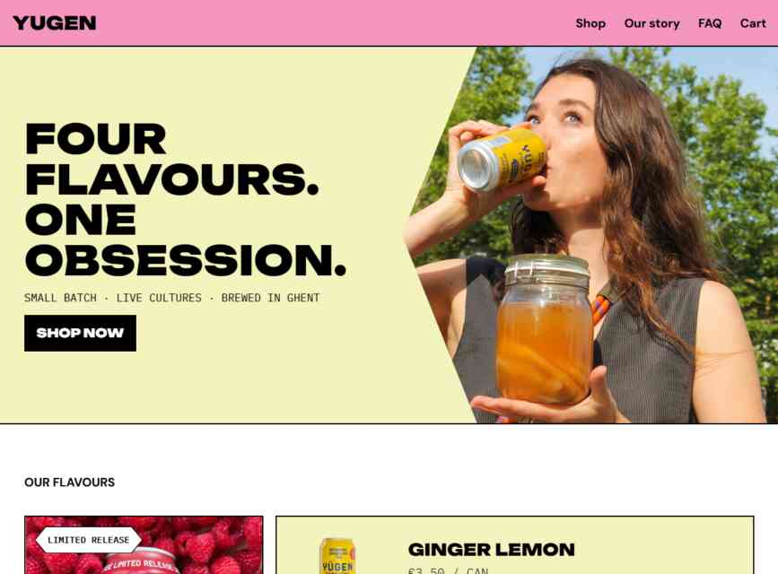

Yugen Kombucha
Voor deze eindopdracht ontwikkelde ik een responsieve website voor Yugen Kombucha op basis van een uitgewerkt Figma-design. Hierbij lag de focus op toegankelijkheid en het gebruik van geavanceerde CSS-technieken .

De website bestaat uit een home pagina en een detail pagina. We moesten hierbij het gekregen design zo nauwkeurig mogelijk namaken.
Bij het ontwikkelen moest ik rekening met toegankelijkheid zoals: het gebruik van semantische html, ARIA-attributen, goede structuur, ... .
In dit project moest bepaalde nieuwe CSS-technieken aanwezig zijn zoals CSS subrid, container queries, clip-path, clamp(), ... . De klassen werden geschreven volgens BEM-notatie en ieder component heeft een aparte CSS-file.